Making a github account is fast and easy. Simply go to github.com and click on the Sign Up button in the top right corner. Enter your information.
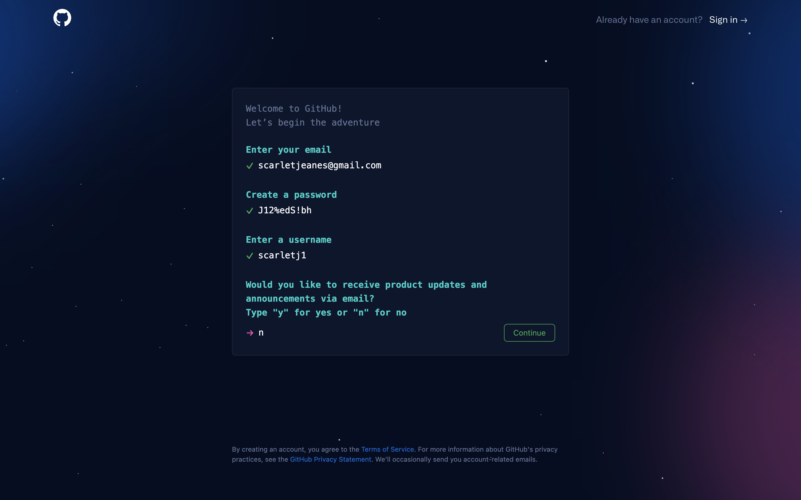You'll be asked to submit a launch code, which you'll recieve through whichever email address you entered.
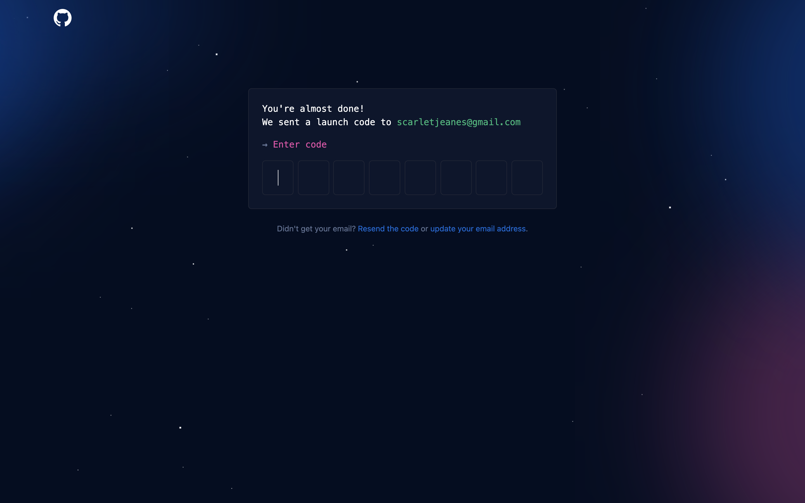 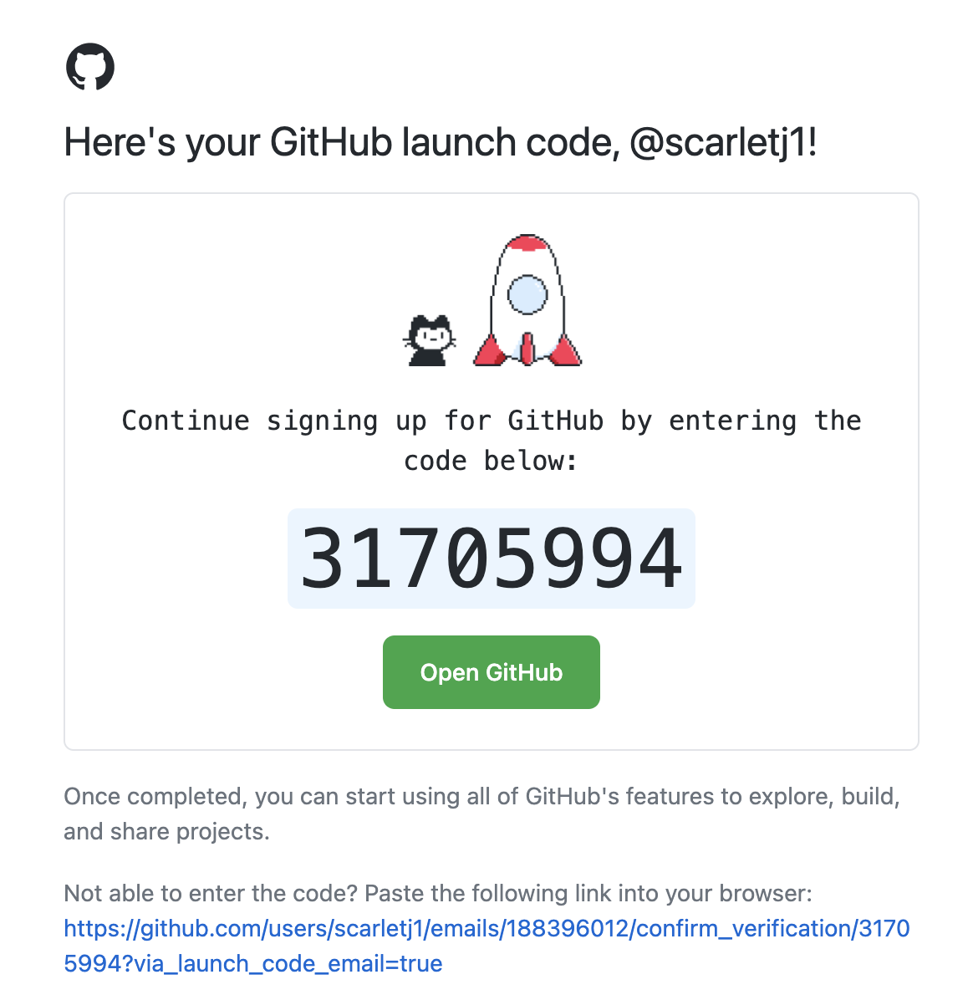Answer their quick survey, and you'll soon find yourself at your dashboard.
To add your website to your account, we'll need to create a new repository. To do this, click on the plus botton in the top right corner, and click "New Repository".
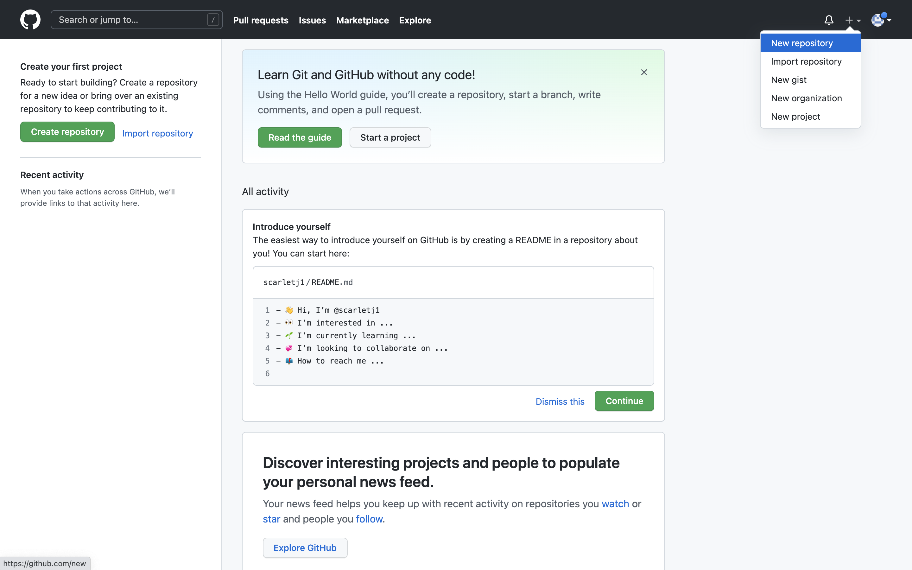You'll find yourself at this page. Give your project a title, leave the description blank. Make sure that it's public and that the README is checked. Then, create the repository.
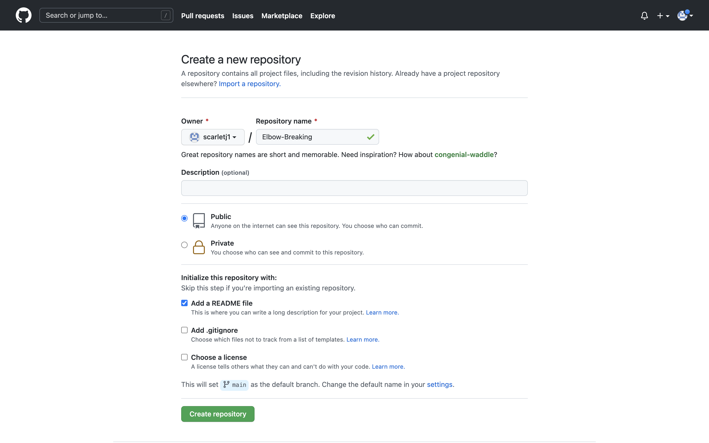That will take you to this page. Click on "Add file" and on the dropdown menu, go to "Upload files".
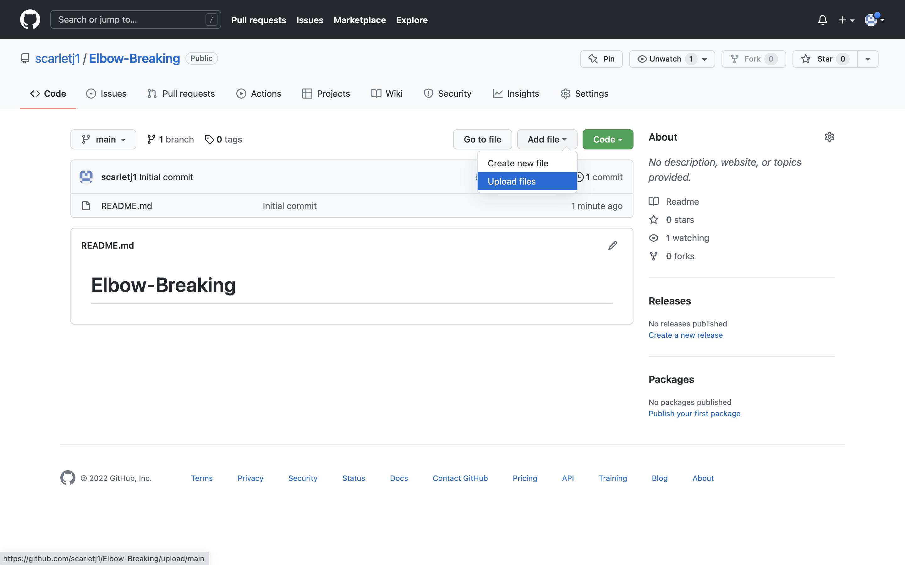You'll be taken here, where you can click "choose your files"
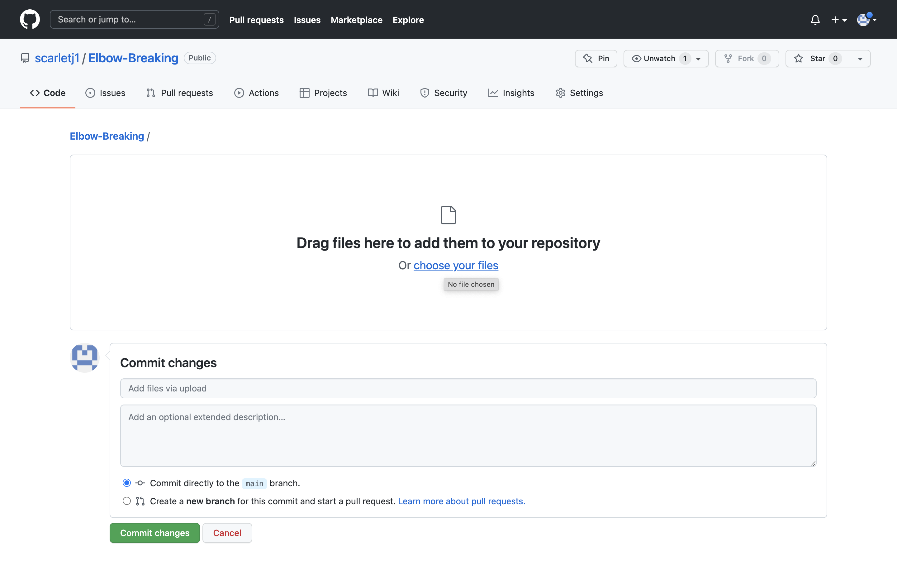Choosing files can be slightly difficult if your files are at different levels of nesting. Bringing them to the same level is different for each text editor, but in the end, you should be able to see all your files at the same level in the same folder. You might need to change the sources of links and images for your site to work correctly. The image on the left is before I made them all at the same level, the image on the right is after.You'll notice that all the files are still there, but they're all in the same folder.
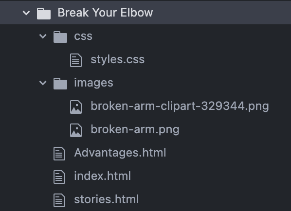 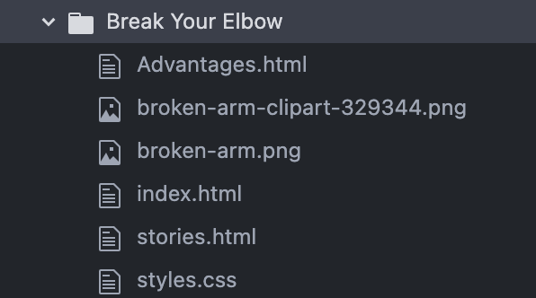Now, you can easily select the files to add them to your github project. Go back to the "choose files" page. When it opens your finder, open the folder with your files and select all of them by dragging your mouse around them. Then click Open.
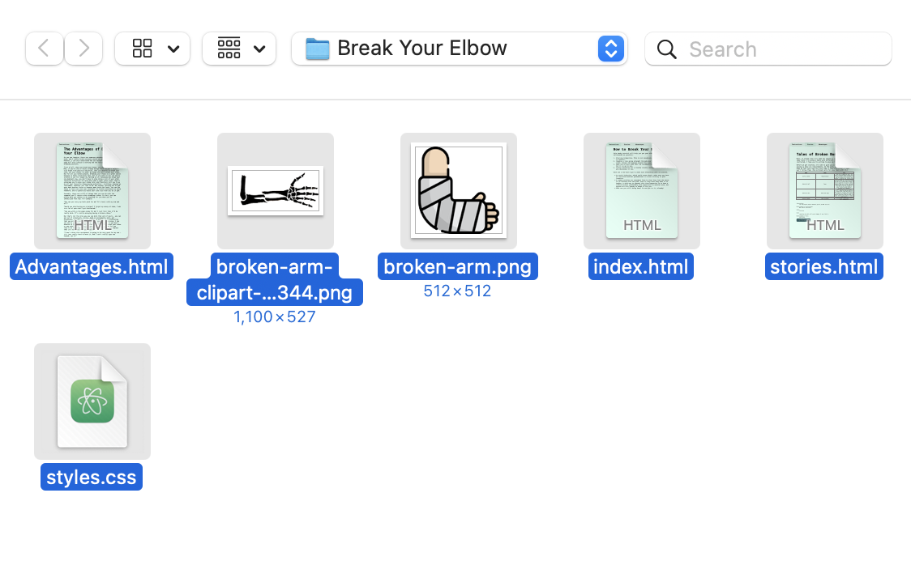Explain what you've changed about the project, select the main branch, and then click commit. For the description, I simply said "added files"
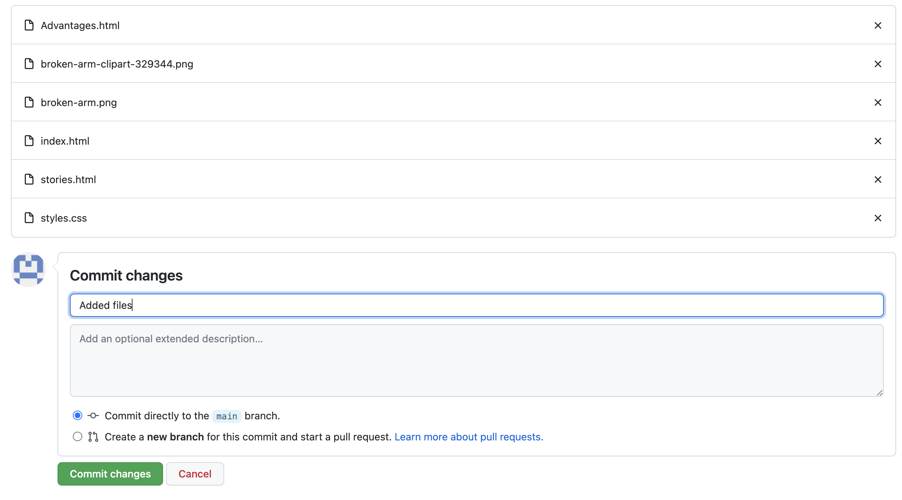congratulations! Your files are now all ready - all we have to do now is publish the page!
Go to the settings tab, and scroll to the bottom to the Github Pages section. Click on the link to get to the Github Pages page.
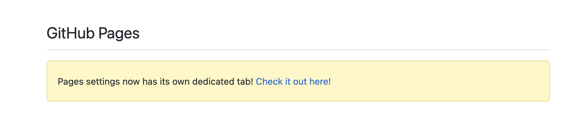Click on "None", and on the dropdown menu, choose "main". Then click Save. The page will look like this.
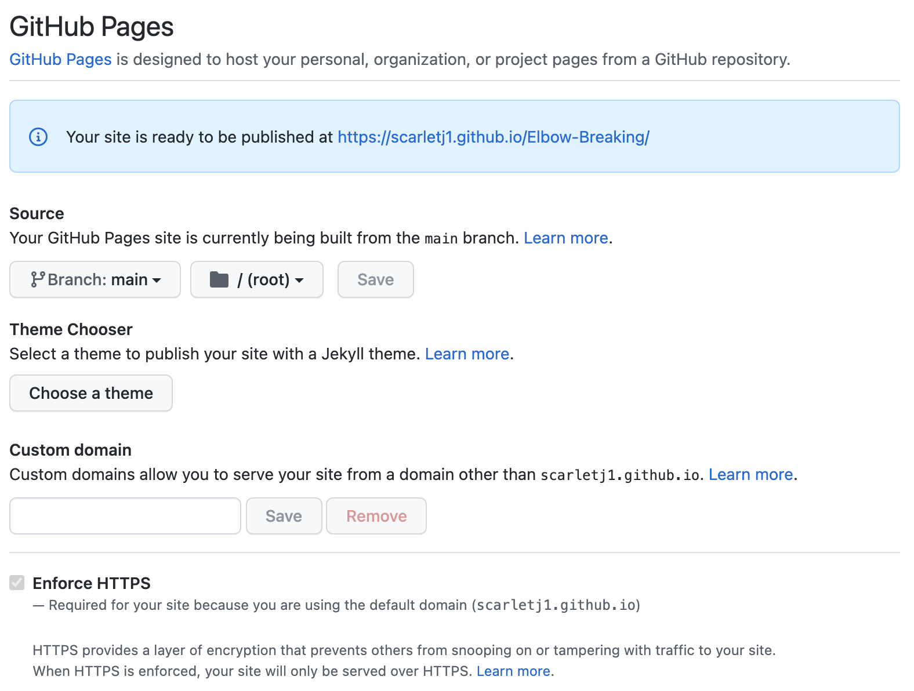Click on the link... and you'll probably get an error message. Keep reloading it every few minutes, it will start working soon.
Nice work! You can now send your friends a link to a real online website.